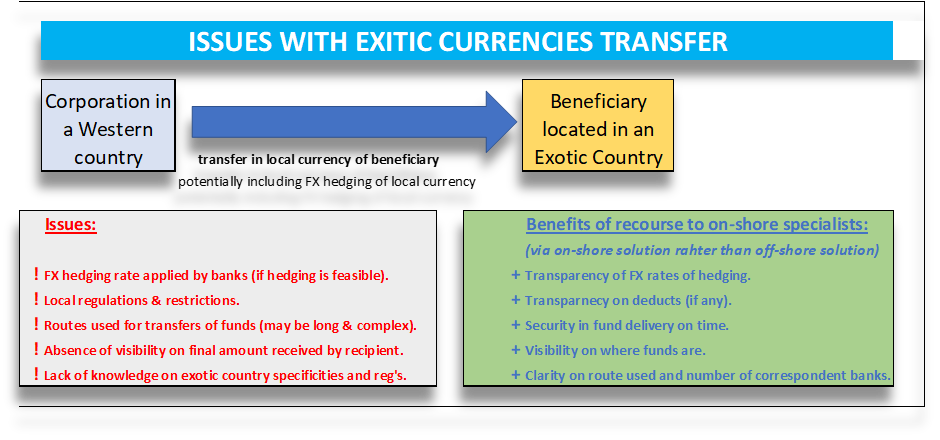

When we talk about payments, we often mean domestic payments (which never cause major issues) or cross-border payments between Western countries (which are also rather easy, secured and relatively fast – eventually faster with SWIFT GPI – “Global Payment Innovation”). However, we always forget these more “exotic” countries (and of course “exotic” currencies) and regions where making a payment in local currency may be much more complex or even impossible for several reasons. For corporate treasurers transferring money in local currency in those more complicate territories it may be a real issue. Even large global banks are unable to serve you properly in some of these faraway countries. Therefore, what are the solutions? How to get a payment done in the local currency and not in hard ones? How to ensure the speed and the net amount received? It is often vital to get some businesses, to be able to pay local suppliers, work forces, taxes, etc.… with local currency. It is also cheaper to pay in these currencies compared to a payment in hard currencies.
It is an interesting challenge, because if you succeed in paying in local currency with potentially hedging of these currencies, you can enhance your cash management while reducing all-in costs. The large global banks should normally be in position to cover all countries and all currencies, providing these countries are not subject to embargo or international restrictions. Unfortunately, even the largest financial institutions may not be in position to cover all your counterparties’ countries and currencies and certainly not to hedge them if needed. Transferring funds to the developing world and provides customized FX hedging and treasury services to customers worldwide is a job of specialists. A good financial supplier (there only few real specialists) should offer competitive and transparent pricing, along with guaranteed and secure delivery. You can assess their performances and capacity by the number of countries they cover (potentially circa 150+ and currencies circa 125+). This includes a fully-fledged domestic payments capability for both in-bound and out-bound payments in Brazil, for example. The best thing is to test them and to compare the benefits of passing directly through specialists. The limited number of partners able to do it usually have years of expertise in these countries and local presence. They want to provide clients with single solutions for their local currency needs. That means providing high-touch specialized foreign exchange and treasury services where desired, as well as electronic payment capabilities through proprietary, fixing enabled and foreign exchange execution platforms.
The success key for these suppliers is to have solid foundations with a strong network of number of correspondent banks. It enables them to engage in price discovery in over hundred + of local markets, bringing pricing transparency for local currency payments to their clients. It is explained by the benefits of remitting local currency over converting hard currency. They may leverage the strength of their partner relationships to guarantee timely and secure delivery of payments – in the full amount. Transparency, net amount guaranteed (without deducts) for the beneficiaries and possibility to hedge are the key features of such bank alternative solutions (in case your international bank cannot execute payment in local currency in a specific territory). These types of problems are extremely frequent with NGO’s and supranational organizations (e.g., Médecins sans frontiers, Red Cross, UN, etc.…), which may have to transfer significant amounts of money to these exotic and more complicate countries. It is important to develop such international cross border payment expertise to base services on trust, service quality, transparency, smooth processes, and efficiency. Think about countries like Uganda, Egypt, Kenya, or Brazil. Executing payments in these countries may become a nightmare for corporates.
Such partners should demonstrate ability to execute these complex transfers in quasi all locations and in countries not covered by your bank. In some cases, an international payment partner like that, often act on behalf of the bank. The customer treasury thinks its bank executes the transfer, although they often subcontract with non-bank specialists of such exotic payments. Such partners should have a solid track record, historical local presence, strong correspondent networks, excellent credentials, but also access to FX platforms (e.g., 360T, FXall, etc..) and to SWIFT network (i.e., the Society for Worldwide Interbank Financial Telecommunication)? Being connected to SWIFT network is important to be able to offer the full set of solution including service bureau. But the solution goes far beyond the payment execution. The second problem is often how to properly hedge these local currencies? Partners in this sector can execute via FX platforms or via their own proprietary platform access to hedging instruments, enable clients to view real-time market rates for various currencies, execute and manage orders in real-time, and view the status of their payments through an easy-to-use portal. On top of that, they may offer a competitive advantage if they enable a customer to generate a variety of analytical reports. The security features to maintain the integrity of the data in the system and ensure a clear audit trail are also important features to check. Eventually, such platforms and solutions should be interfaceable with TMS’s or ERP’s of customers.

Institutions often debate the benefits and drawbacks of remitting payments in hard currency versus local currency in developing countries. Experienced and senior treasurers believe that local currency payments serve their counterparties best. By sending hard currency directly to the beneficiary bank for conversion locally, an organization potentially opens itself up to uncontrolled loss and relies on the local bank as its sole rate source. In many cases, the bank then converts the funds at the rate of the day, which is usually much less favorable than what can be attained by soliciting competitive bids. In fact, it is not uncommon for the difference to be as much as few percent (i.e., up to 5+%). In addition, there are added fees associated with sending hard currency to be converted locally. As a result, it is more advantageous to fund in local currency, thereby ensuring access to competitive rates and maximum levels of funding for field projects. The financial markets and banking systems in many developing countries are inherently volatile and can be negatively impacted by political instability, corruption, and perpetual underdevelopment. The regulations of some of these countries are constantly changing, generating uncertainties and risks. Therefore, maintaining large sums of hard currency in-country leads to many potential complications including misappropriation of funds, substantial country and credit risk, and an overall lack of accounting transparency. By transacting in the international market for local currency, the funding and accounting process is made more secure and accurate while reducing the potential for corruption and fraud.
Global compliance standards have been raised significantly in recent years. With the introduction of new laws and regulations in many countries worldwide, organizations must be aware of and adhere to current regulations regarding international currency transfers. By actively monitoring the currency exchange process from its Head-Office, a group treasurer can ensure not only that he/she is compliant but also that all financial dealings are undertaken with approved counterparties. A corporation not only needs cost-efficient processes and competitive rates, but they also need fast and reliable services. A good service provider should guarantee delivery within two business days or earlier to all locations. I do believe that these days, the digitization of execution is essential and requested by large MNC’s to enable clients to access real time rates and process international payment requests. The real-time treasury concept is an obvious objective for group treasurers to satisfy C-level requests. It explains why they prefer system operating 24/5 and with dedicated staff, located across three time zones, assigned to assist them in making payments to emerging markets. After this health crisis, we all understood that time is the key issue in business and to remain resilient. We believe that given complexities of some regions and currencies, outsourcing these specific payments with specialized financial partners (different from global banks) is the best solution. It enables to seize all benefits and competitive advantages of paying in local currencies whatever the location. It is certainly a best practice in corporate treasury, which perfectly complement a global group bank strategy.
François Masquelier
Chairman
ATEL
.png "The LEI: Unlocking the Benefits of a Secure Payments Ecosystem for Corporate Treasurers")
The EACT has been advocating for a digital identity for Corporates for many years now. We believe that, Corporates, like individuals, must have a single identity which help them to identify itself and identify third parties as well in this digital era.
Read.png "LkSG Relevant for Treasury on a Case-by-case Basis")
The Supply Chain Due Diligence Act (LkSG) creates the legal framework to improve the protection of the environment and human rights along German supply chains. GACT spoke to Dr. Julia Sitter (White & Case LLP) about the relevance and need for action by treasury departments.
Read.png "CMU, The Come-Back!")
The Capital Market Union, which was one of the main objectives of the Vander Leyen Commission, is back in the limelight, and is likely to become a priority for the next Commission next summer.
Read.png "What Will be the Corporate Treasurer's Priorities for 2024?")
General insights into the common priorities of corporate treasurers that will still be relevant in 2024.
Read.png "Counterparty Risk Assessment by Treasurers")
François Masquelier lists some comprehensive steps to best assess counterparty risks.
Read